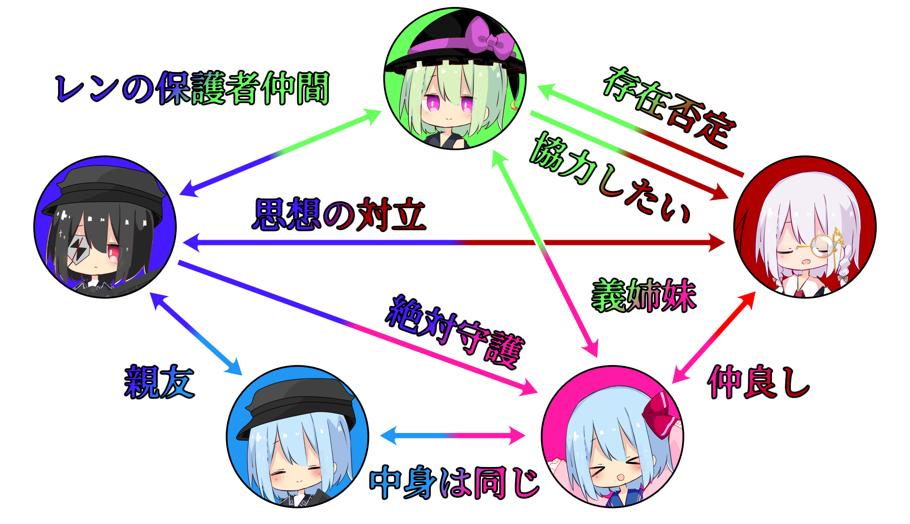

■ キャラプロフィール ■
当チャンネルのオリキャラの自己紹介ゾーンです。

-異界の奇術師- 朱音ライ(ｱｶﾈﾗｲ)
能力:認識を異化させる程度の能力
誕生日:12/3
・異界出身の自称マジシャン。投稿者代理として雇われている。
・自意識過剰で承認欲求が非常に強く、自分より上の存在がいることを嫌う。
・膨大な魔力を保持し、その力で他人を洗脳したり、大規模な認識改変を起こしたりすることができる。
・特定の分野において博識で、人体改造や人体模倣を研究している。
・片目に付けているモノクルは、本人曰く『ただのかっこつけ』。
-回歴するヒトの形- 空愛レン(ｱｶｱｲﾚﾝ)
能力:衰弱と溌剌を操る程度の能力
誕生日:7/1
・精巧に作られた等身大の魔力人形。浅海スイの魂が取り込まれている。
・幼気の残る女の子で、知り合いに対して度々甘えん坊になる。
・死の瞬間のみ浅海スイの頃の記憶が残っており、それが影響して極めて精神が不安定になっている。
・ライをも超える程の膨大な魔力を有しており、精神が限界に達するとそれを全て放出してしまう。
・有り余る魔力の使い道で少し悩んでおり、最近は猫耳を生やしたりして消費している。


-狙撃手の眼- 鍵原リン(ｶｷﾞﾊﾗﾘﾝ)
能力:十里先を撃墜する程度の能力
誕生日:9/21
・朱音ライと同じ異界在住の軍服の少女。表情が少し硬い。
・かつて存在した帝国主義国家の兵士で、陸兵長まで上り詰めていたものの、現在は軍を抜けている。
・魔力が少ない分銃器の技術が最上級で、中でもライフル小銃と二丁拳銃を得意としている。
・浅海スイとは軍の同期かつ親友だったが、小休憩中にゲリラ爆撃に巻き込まれ死別した。
・眼帯は祖国の国旗の模様が描かれた特製品で、基本的には常に身に付けている。
-青髪の狙撃手- 浅海スイ(ｱｻﾐｽｲ)
能力:不詳
誕生日:7/30
・不幸にも命を落としてしまった軍服の少女。とても友達思い。
・かつて存在した帝国主義国家の兵士で、戦績優秀生で上等陸兵まで進級した。
・鍵原リンとは軍の同期かつ親友で、彼女の銃の才能に憧れると共に、彼女にかなり依存していた。
・リンとの小休憩中、敵軍の大規模なゲリラ爆撃に巻き込まれ、その際にリンを庇ったことで戦死した。
・死後、亡骸を見つけた朱音ライに回収されたことで、現在は空愛レンとして第二の人生を生きている。


-マジカル・ドナー- 空愛ノナ(ｱｶｱｲﾉﾅ)
能力:限界を引き出す程度の能力
誕生日:12/14
・空愛レンが朱音ライの人体改造を真似して作った魔力人形。何よりもレンの存在が生きがい。
・自身をレンの義妹だと自称しており、レンをお姉ちゃんと呼ぶ他、姉妹同様の距離感で接している。
・過去に技術を盗まれたと激怒したライに異化されてから、狂気の性格も持ち合わせている。
・主に治癒魔法と闇符魔法を得意とするが、狂気の性格でない限りは治癒魔法のみ使用する。
・能力と下の名前はライが付けたもので、ノナはラテン語で『9』を意味する。
関係早見表

2026 プロセス-LIGHT- / ゆっくりライと